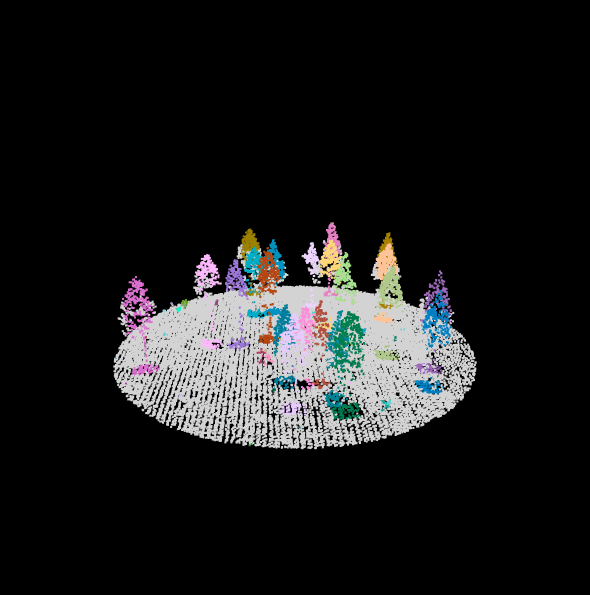
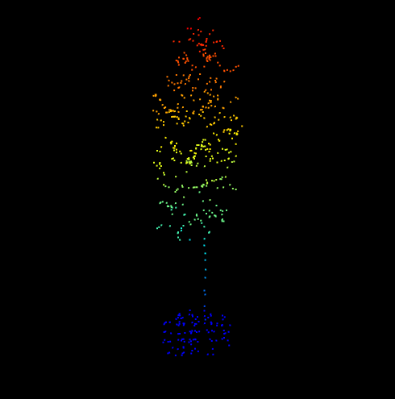
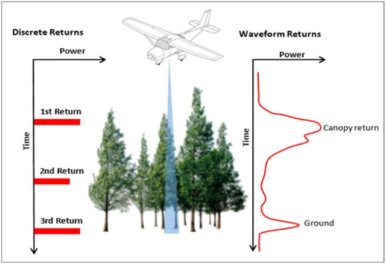

LiDAR Tools and Workflows
LiDAR, which stands for Light Detection and Ranging, is a remote sensing technology that measures highly accurate distances by emitting laser pulses onto the Earth’s surface to create 3D maps of objects and landscapes (Park et al., 2023; Roussel et al., 2020). This technology provides precise three-dimensional data about topography and surface features (Tooke et al., 2009).
In forestry, LiDAR is commonly used for mapping and assessing forests, including estimating tree heights and canopy structures (Roussel et al., 2020). In urban planning, it supports applications such as land use planning and infrastructure development (Dawood et al., 2017).
 Figure 1: Tree detection using LiDAR (GIF demo).
 Figure 2: Individual tree identification workflow using LiDAR.
Types of LiDAR
LiDAR systems are broadly categorized into two main types: Discrete Return LiDAR and Full Waveform LiDAR. Each type collects data differently and serves distinct purposes depending on the application.
Discrete Return LiDAR, commonly used in terrestrial and airborne surveys, captures distinct return points from each laser pulse, producing a 3D point cloud of the scanned environment.
Full Waveform LiDAR records the entire energy profile of the returning signal, offering a continuous vertical representation of surfaces, which is especially useful for analyzing complex vegetation structures or terrain in satellite-based applications.
Types of LiDAR Systems
✈️ Airborne LiDAR
Mounted on drones or aircraft to map forests and terrain from above.
🌲 Terrestrial LiDAR
Stationary ground-based scanners used for capturing tree trunks and structural details.
🛰️ Spaceborne LiDAR
Satellite-based systems used for global ecosystem monitoring and elevation mapping.
🚗 Mobile LiDAR
Mounted on vehicles or backpacks for scanning roads and built environments while in motion.
 Figure 3: Types of LiDAR from Salas (2021).
How Does LiDAR Work
LiDAR works by emitting laser pulses from a sensor mounted on an aircraft or ground-based device. These laser pulses interact with objects and the Earth’s surface and then bounce back to the sensor. By precisely measuring the time it takes for the laser pulses to return, LiDAR can calculate the distance between the sensor and the objects or the ground surface.
LiDAR creates a detailed 3D map of the surveyed area, including terrain, vegetation, buildings, and other objects. This data is valuable for various applications, including forestry (like estimating tree heights and canopy structure), urban planning, flood modeling, and more. LiDAR technology provides highly accurate and detailed structural information, making it essential for many scientific and environmental studies.
The most common format for discrete-return LiDAR point cloud data is a LAZ file (e.g., lidar_data.laz). LAZ files are a lossless compression of LAS files, which was the industry standard LiDAR data format for a long time. LAS files are still used somewhat, but given the vastly reduced file sizes of LAZ, LAZ has largely replaced LAS.
Common Tools for Processing LiDAR
R (lidR package)
The lidR package is a free and open-source tool in R for processing and analyzing LiDAR data. It supports point cloud filtering, tree detection, DTM/CHM generation, and forest metrics.
🐍 Python (PDAL)
PDAL (Point Data Abstraction Library) is a powerful open-source library, similar to GDAL. It’s built in C/C++ but offers a robust Python interface. PDAL uses a pipeline system written in JSON, making it highly customizable.
CloudCompare
CloudCompare is an open-source tool designed for viewing, editing, and processing point clouds. It’s user-friendly and highly interactive, making it ideal for visual exploration of point clouds.
LAStools
This tool is ideal for efficiently processing large quantities of LiDAR data. It supports both command-line and GUI workflows, and it’s often used for automated pipelines.